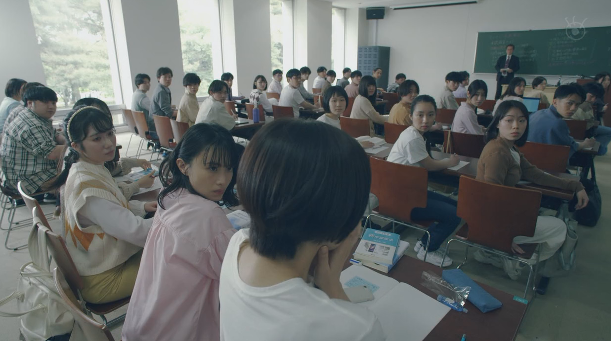
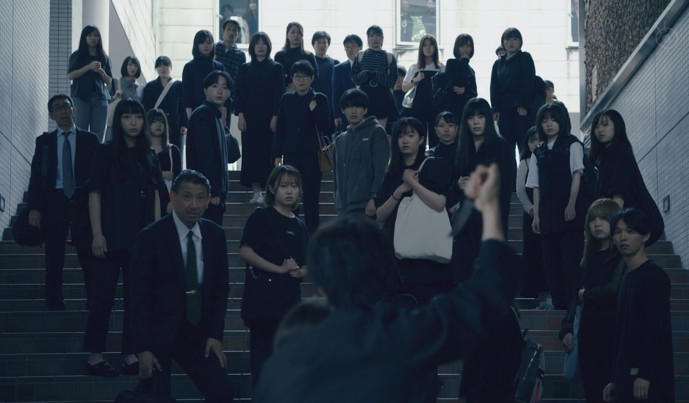

最近刚刚看完世界奇妙物语2023夏季特别篇，世界奇妙物语是我从大学时期开始一直在看的日本电视剧。这个电视剧已经连载了几十年，虽然是连续剧，但是每一集都是一个独立的小故事, 随时入坑都不算晚，目前每年夏天和秋天会出一个特别篇，由几个小故事组成。
本篇的故事关键词是注视。
故事1：公主俱乐部
远藤小时候是富商的女儿，因此花巨资参加了一个公主俱乐部，主要学习欧洲贵族的舞会礼仪，参加俱乐部的”公主“成年的时候还会举办一个成人礼舞会，让这些假公主和假王子一起跳舞。不过遗憾的是女主在成年之前父亲就破产了，她也变成了一个平平无奇的家庭主妇，因此一直没能实现和王子跳舞的梦想。忽然有一天公主俱乐部的业务员又找到了她，她回想起了自己的公主梦，于是花费几十万日元送女儿去参加了一次公主俱乐部的活动，在活动当中她一直在幻想自己有机会能和王子一起跳舞，越想越入迷。后来在询问了业务员之后得知参加这样的舞会需要2,000万日元，恰好她又给丈夫买了2,000万日元的保险，所以她的丈夫就很倒霉的成了牺牲品，女主获得2,000万日元赔偿以后如愿参加了公主舞会，实现了自己“成为全场的焦点”的梦想。
故事2：小林家的主题乐园
故事讲的是小林一家人，在子女成年以后变得越来越疏远，于是他们开始怀念曾经一起去主题乐园的时光。所以他们想了一个点子，在自己家开一个主题乐园，主题乐园只有几个非常无聊的项目，分别是：父亲坐在前面当尊者给大家讲人生哲理，母亲在浴杠里面给陪大家玩海贼王大航海游戏，女儿在屋里表演睡觉由其他人观赏。
由于电视广告的宣传，小林家的主题乐园每天都大排长龙，很多人玩了都在网络上发帖赞不绝口。但是这种突然爆红的东西就和我们见到的所有网红的东西一样，很快就经历过了火爆、充满负面评价、无人问津的过程。
故事3：视线眼药水
故事讲的是有一种眼药水，只要你滴了以后就会让所有人的目光都看向你，就像这样😅：

但其实这只是一种幻觉，实际上大家都在各做各的事情，根本没有人在看你。故事的男主和女主却因为使用这种眼药水而上瘾了，他们爱上了被别人注视的感觉，最终就像犯了毒瘾一样，去争夺最后的一瓶眼药水。 在眼药水彻底用完以后，男主不惜拿刀劫持女主，来获得他人关注的目光。

韩炳哲：《他者的消失》
为什么要费时间复述这几个个故事呢？因为这几个故事非常具有启发性，特别是我在逛西西弗的时候，偶然看了一本韩炳哲的《他者的消失》以后。
他者是西方哲学的一个重要的词汇，我也不敢说 我能完全理解它代表着什么，但是作为一个略懂数学的人，我只知道我可以先从一些侧面了解它。
- 与自我相区别开的一切的人和事物都是他者
- 他者并不一定是实体，一些虚拟概念也可以是他者，比如我是无神论者，基督教就是他者
- 他者是一个音译词，英文为
The Other， 相对要容易理解一些
韩炳哲之所以要说他者消失，主要是因为在西方哲学的很长的一个阶段，主线任务都是去揭露种种他者的阴谋，去打破神话，打破迷思，打破不合理的可见的或者不可见的制度，让人从他者的禁锢当中解放出来，认清自我，追寻自我。
但是在自我解放出来以后的这些年，人类真的过得更好了吗？其实不然，这也就是韩炳哲要发表这样的论点的主要原因了。我们将一切的旧制度旧思想彻底否定以后，将一切的他者都撕碎焚烧以后，留下的只有一个完全被同化的恐怖的世界。自我不再接受否定，也不再倾听他人的语言，你结交了很多人，或者在网络上获得了很多的粉丝，但是你只能接受以点赞建立的关系，交流不再传递信息，你不再从外界获得新的东西，你看的东西再多，结交的人再多，最终也只会获得一个不断增生肥大的自己。这种同质化在生成式人工智能高速发展下会被空前增强，世界会变得越来越无趣，互联网夺走了人与人面对面的对视，也夺走了人听见他人声音的机会，人越来越看不见他者的存在，虽然电子数据表示的标准化文字已经让辨认一个人变得困难，但是偶尔人们还是能从一段文字中读出：“这就是博尔赫斯写的”，而有了生成式人工智能之后，这点特异性也将会被抹杀。
从目前的视角来看，他者自古以来就是以一种令人讨厌的状态出现在我们的生活当中，他者否定我们，约束我们，自我与他者的斗争，在他者消失以后彻底结束了。当然这里自然而然就产生了一个疑问：为什么哲学家花费了这么多年去批判揭露才让他者消失，我们现在又要重提他者存在的价值呢? 难道搞哲学也跟和面一样，水多了加面，面多了加水吗？我想赛里斯人是最能理解这一点的，中庸二字就足以概括其中的玄妙，我们经常看见这样的争论：该坚持理想主义还是认同现实主义？该崇拜金钱还是视金钱如粪土？要实行民主政治还是威权统治？实际上每一个选项都是错的，你要找一个中间地带，才能过上自洽的生活。
当然这一本书短小精悍，有兴趣的还是推荐一看的，或许会有醍醐灌顶之感。
还是先讲讲今天的故事吧。
公主俱乐部讲的是一个自恋的故事，虽然女主小时候是富商家庭的女孩，但是在成为普通的家庭主妇之后，由于完全忽略他者的声音，她陷入了无穷无尽的自恋当中，为了”当公主跟王子跳舞“这样一个荒唐的想法，不惜害死自己的丈夫。而如果将这个故事讲给当今世界上某一些陷入癫狂的人听，他们可能会支持然后提出：“为了完成自己儿时的梦想，花个2,000万日元也是小事一桩”、“勇敢的人先享受世界”等等意义不明的词汇作为辩解。对于这种现象，我只能说必须要给她两个大比兜她才能够变得清醒，暴力这样的他者应当一定程度的存在，否则很多人是不会老实的，人其实就是两条腿的黄牛，鞭子抽得够狠比任何的道理都有效。就像现在的教育体制，推行鼓励式的素质教育，最终结果只是培养了一伙自说自话自以为是，完全不接受他人批评，结果却因为不愿意吃苦而连最基本的专业知识都没有好好学过的人。
小林家的主题公园，我想也是最能令大家感同身受的东西。在他者消失以后，否定性的东西消失了，肯定性的东西推动人们患上了各种各样的饥饿病，疯狂地生产垃圾同时又在垃圾堆里暴饮暴食。一个平平无奇家庭住宅改造成的主题公园，因为网络上信息的肯定性的正反馈的病毒式传播，就导致了人们成群结队跟风参观。而赛里斯社会现在就在这样一波一波的癫狂当中不断的进行螺旋式的螺旋，至于有没有上升这个我很难判断，昨天是天水麻辣烫，前天是淄博烧烤，大前天是东北小土豆，然后又成了山东土狗网红郭有才在火车站前面鬼哭狼嚎直播赚大钱开宾利，还有每一个景点的轰炸大鱿鱼、暴打柠檬茶、“我在茅坑很想你”的路牌，都是这种狂吃狂看的病态产物。
视线眼药水那就是对社交媒体时代的隐喻了，人们在镜头前面搔首弄姿，只是为了获得他人的视线，这种关注的视线像是毒品一样让人上瘾。我攒了很久的钱去吃一顿很贵的日本料理，去了一次有趣的旅行，买了一辆豪华的汽车，但是如果没有人看见，这一切就会毫无意义，在这样的生活中，意义完全来自于他人的视线。既然他人在注视着你，那又为什么说他者消失了呢？因为他们根本就没有注视你，他们只是注视着一个匿名的时间轴，等着信息主动进入他们的视线范围内。过去的注视像是一个表演者在舞台上演出，其他人踮起了脚尖观看；而如今的人却像是报童，在街上一边奔跑一边大声喊着：“号外号外，快来看我今天穿了红色的内裤”。这些思考仅仅是梳理，而非价值评价，如今生活的矛盾之处在于，人们生活的意义来源于他者的注视，但是人们又因为一些客观原因很难再看到他者的存在，他者的注视本身也变得若有若无，也就是说现在的你不管是渴望或者是厌恶他者的存在，都会看到一片虚无，因为这是个人主义和原子化的时代。